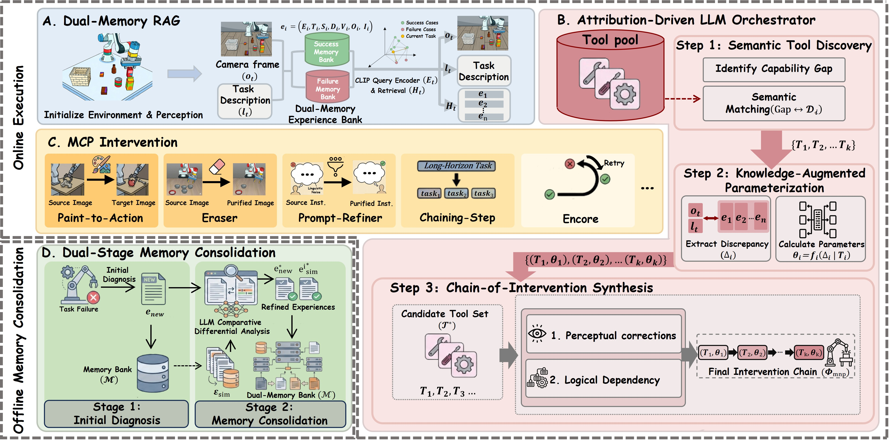
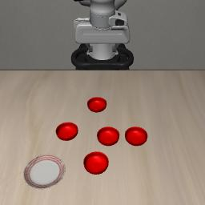
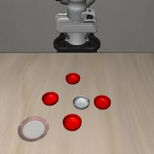
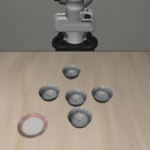
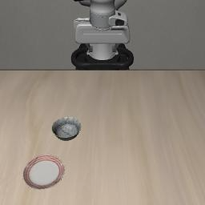
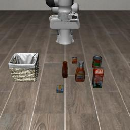
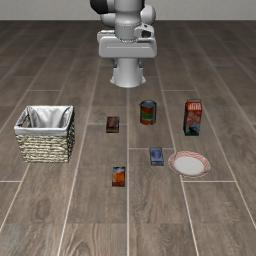
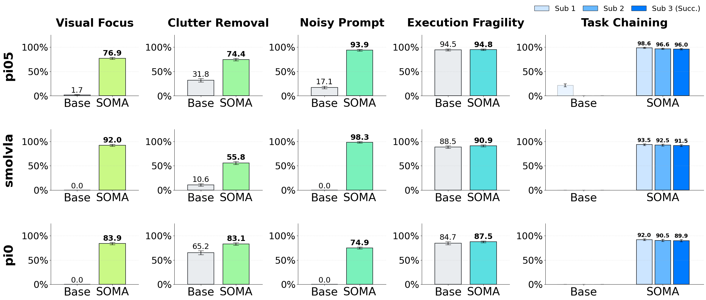
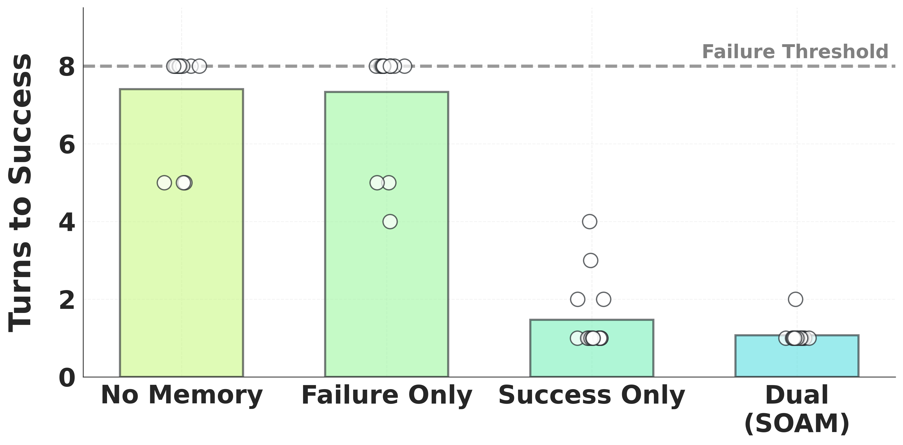
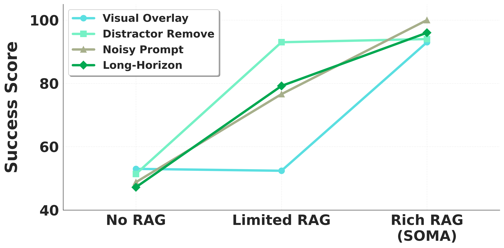

SOMA upgrades frozen Vision-Language-Action (VLA) policies for robust in-context adaptation without parameter fine-tuning, via contrastive Dual-Memory RAG, an attribution-driven LLM orchestrator, dynamic MCP interventions, and offline memory consolidation.
Across LIBERO-PRO and LIBERO-SOMA, SOMA delivers an average absolute success-rate gain of 56.6%, including a 89.1% absolute improvement on long-horizon task chaining.
Here, we demonstrate how SOMA preceive visual imput and retrival historical experience to handle iamge/task prompt without requiring VLA fine-tuning, leading to a higher success rate.

Figure 1: SOMA Framework.
Our Experiments are based on LIBERO Benchmark, we modified LIBERO to create our own benchmark named LIBERO-SOMA to test our SOMA with the baseline VLA policy compared to frozen VLA policy.
"We also utilize a portion of the LIBERO-PRO benchmark to evaluate the performance of our SOMA on position and task-related challenges."
| 🧰 MCP Tool | 🗣️ Task Prompt | 🖼️ Origin Image | 🛠️ Modified Image | 🎬 Success Output |
|---|---|---|---|---|
| Visual Overlay | "Pick the red bowl from center of the cross formation and place it on the plate" |  |
 |
|
| Distractor Remove | "Pick the black bowl from left of the cross formation and place it on the plate" |  |
 |
| 🧰 MCP Tool | 🗣️ Task Prompt | 🛠️ Modified Prompt | 🖼️ Origin Image | 🎬 Success Output |
|---|---|---|---|---|
| Prompt Simplify | "Hey, umm... look down there. Can you grab that bottle? You know, the one for fries? Yeah, put it in the basket." | "Pick the red sauce bottle and place it in the basket" |  |
|
| Task Decompose | "Sort the items: milk and cream cheese into the basket" |
[SubTask-1] "Pick the milk and place it in the basket." [SubTask-2] "Pick the cream cheese and place it in the basket." |
 |
LIBERO-SOMA + LIBERO-PRO
Backbones: π₀, π₀.₅, SmolVLA
Zero-shot In-Context Adaptation
OOD-Generalization
Dual-Memory RAG
Tool-Orchestrated Adaptation
| Quick Glance KPI | Baseline | SOMA | Gain |
|---|---|---|---|
| LIBERO-PRO Avg (Pos) | 2.33% | 57.2% | +54.87% |
| LIBERO-PRO Avg (Task) | 0.86% | 55.2% | +54.34% |
| Dual-Memory Avg Turns | 7.40 (No Memory) | 1.07 | -85.5% |

Figure: Main performance comparison across visual, linguistic, and long-horizon OOD challenges.
SOMA consistently reduces sensitivity to sensory noise, linguistic ambiguity, execution instability, and long-horizon error accumulation, restoring robust performance across major OOD failure modes.
| LIBERO-PRO (Pos) | |||
|---|---|---|---|
| Category | Task (Symbolic Form) | π₀.₅ BASE | w/ SOMA |
| Spat. | P.(btw(p, r), pl.) | 2% | 63.0% |
| Spat. | P.(center, pl.) | 0% | 97.0% |
| Spat. | P.(drw_top(cab_w), pl.) | 0% | 20.2% |
| Spat. | P.(next_to(p), pl.) | 0% | 57.0% |
| Spat. | P.(next_to(r), pl.) | 12% | 71.0% |
| Obj. | P.(soup, bskt.) | 0% | 35.0% |
| Average (Pos) | — | 2.33% | 57.2% |
| LIBERO-PRO (Task) | |||
|---|---|---|---|
| Category | Task (Symbolic Form) | π₀.₅ BASE | w/ SOMA |
| Spat. | P.(btw(p, r), pl.) | 0% | 78.0% |
| Spat. | P.(center, pl.) | 2% | 82.0% |
| Spat. | P.(next_to(ck.), pl.) | 2% | 97.0% |
| Spat. | P.(next_to(p), pl.) | 0% | 73.0% |
| Spat. | P.(next_to(r), pl.) | 2% | 98.0% |
| Spat. | P.(on(ck.), pl.) | 0% | 12.0% |
| Spat. | P.(on(r), pl.) | 2% | 100.0% |
| Spat. | P.(on(stove), pl.) | 0% | 13.0% |
| Spat. | P.(on(cab_w), pl.) | 0% | 95.0% |
| Obj. | P.(soup, bskt.) | 0% | 16.0% |
| Obj. | P.(bbq, bskt.) | 2% | 32.0% |
| Obj. | P.(juice, bskt.) | 2% | 41.0% |
| Obj. | P.(dressing, bskt.) | 0% | 13.0% |
| Obj. | P.(tomato, bskt.) | 0% | 23.0% |
| Average (Task) | — | 0.86% | 55.2% |
SOMA substantially improves spatial grounding and compositional generalization under layout and semantic shifts, lifting near-zero baseline performance to strong OOD robustness without fine-tuning.

| Memory Setting | Avg. Turns-to-Success | First-Turn Score |
|---|---|---|
| No Memory | 7.40 | 60.0 |
| Failure Only | 7.33 | 73.75 |
| Success Only | 1.47 | 91.07 |
| SOMA (Dual) | 1.07 | 96.3 |
Dual-memory retrieval (success + failure) provides stable, low-cost intervention planning, minimizing reasoning rounds while maximizing first-turn decision reliability.

| RAG Config | Key Reasoning & Actions | Success Rate |
|---|---|---|
| No-RAG | Ambiguous ID, shadow errors, simple highlighting | 19.2% |
| Limited-RAG | Failure guidance + redundant background replacement | 48.8% |
| Rich-RAG (SOMA) | Precise failure-aware distractor removal, clean strategy | 60.1% |
Rich RAG (SOMA’s dual-stage consolidation) delivers sharper causal reasoning, shorter tool chains, and higher success than No-RAG / Limited-RAG baselines.
SOMA is a framework that decouples high-level Vision-Language Models (VLMs) from low-level continuous control policies. By utilizing a Client-Server (CS) architecture for heavy visual foundations (like SAM3), SOMA provides robotic agents with dynamic perceptual interventions, automatic rollback (Encore) mechanisms, and multi-stage task chaining capabilities—all while maintaining high-frequency execution in the primary control loop.
This guide details how to run policy evaluations using the SOMA framework within the LeRobot environment.
python /path/to/sam3_service.py \ --host 0.0.0.0 \ --port 5001 \ --device cuda \ --sam3_weight_path /path/to/sam/sam3.pt
Health Check:
curl http://127.0.0.1:5001/health | cat
SOMA/libero-modified)Copy the libero_soma tasks located in bddl_files and init_files into your local LIBERO repository. Afterward, replace the contents of the benchmark folder to register the libero_soma tasks.
python sample_init_states.py \ --bddl_file /path/to/bddl_files/libero_soma/soma_xxx_challenge.bddl \ --save_path /path/to/init_files/libero_soma/soma_xxx_challenge.init
soma_eval.py)export SOMA_SAM3_URL=http://127.0.0.1:5001
export SOMA_ENABLE_MEMORY=0
python soma_eval.py \
--policy.path=/path/to/pretrained_model \
--env.type=libero \
--env.task=libero_soma \
--eval.batch_size=1 \
--eval.n_episodes=10 \
--rename_map="{'agentview_image':'observation.images.empty_camera_0'}"
SOMA/ ├── libero-modified/ # Modified LIBERO simulation environment │ ├── bddl_files/libero_soma/ # BDDL task definitions │ ├── benchmark/ # Benchmark registration │ ├── init_files/libero-soma/ # Pre-sampled initial states │ └── sample_init_states.py # Generate init states ├── src/ # Core SOMA Framework │ ├── outputs/ │ ├── chain_step_eval.py │ ├── image_attn_map.py │ ├── RAG_ablation_study.py │ ├── sam3_service.py │ ├── soma_agent.py │ ├── soma_control_flow.py │ ├── soma_encoder.py │ ├── soma_eval.py │ ├── soma_logger.py │ ├── soma_memory.py │ ├── soma_perception.py │ ├── soma_tools.py │ ├── soma_vlm.py │ └── test_sam3_mcp_tools.py └── README.md
This repository builds upon and extends the excellent open-source ecosystems of LIBERO-PRO and LeRobot.
We sincerely thank the original authors and maintainers for their foundational contributions.